SYNOPSIS
DOOMSDAY follows the daily lives of the residents of YESTERDAY’S PROMISE: a millennial cult and self-sustaining green-community hidden in the Catskill mountains. Featuring both present action inching toward doomsday and flashbacks revealing how and why each member came to join the secretive sect, the series explores the gray area where youthful idealism evolves into deadly extremism and documents the eerie final months leading up to a horrific Jim Jones style massacre.
Recent award-winning documentaries like Alex Gibney's GOING CLEAR and Will Allen's HOLY HELL have captured audiences interest as well as garnering critical acclaim by exposing the polarizing worlds of secretive religious groups. DOOMSDAY will be the first network narrative series to creatively explore this dark world in unflinching, gritty detail.
The screenplay was loosely based on writer Sonja O'Hara's own experience acting in Scientology propaganda films when she was a nineteen year-old actress living in Hollywood. She became intrigued by the polarity between the public and private facades of secretive religious groups and was inspired to create the fictional cult featured in DOOMSDAY. Tonally the series could be compared to HBO's THE LEFTOVERS meets Sundance Film Festival’s MARTHA MARCY MAY MARLENE.
In season one, DOOMSDAY delves into the psychology of victims of Stockholm syndrome, and features storylines involving controversial conversion therapy techniques, a criminal investigation following a member’s murder, and an uprising from within the group when the cult leader is exposed as a fraud.

 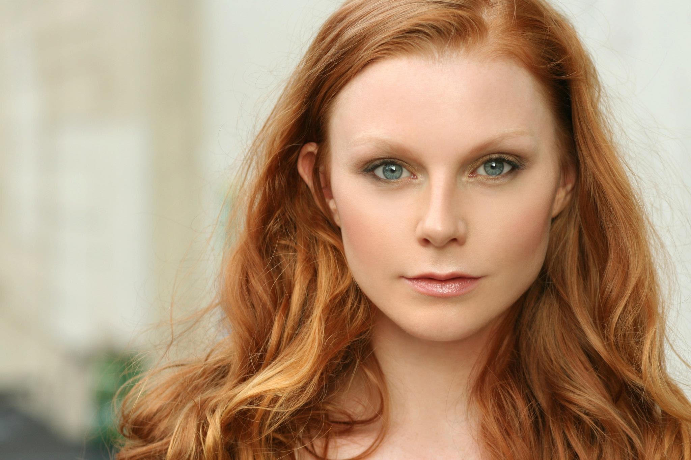
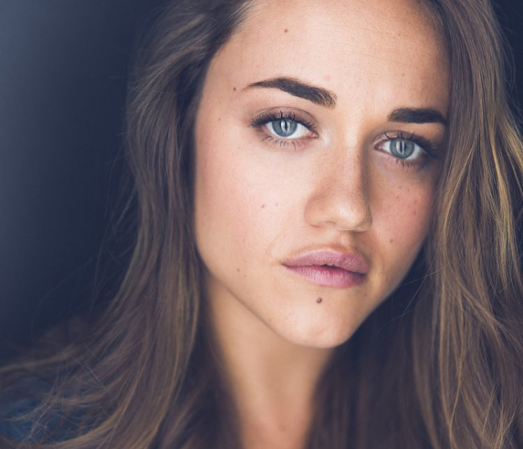
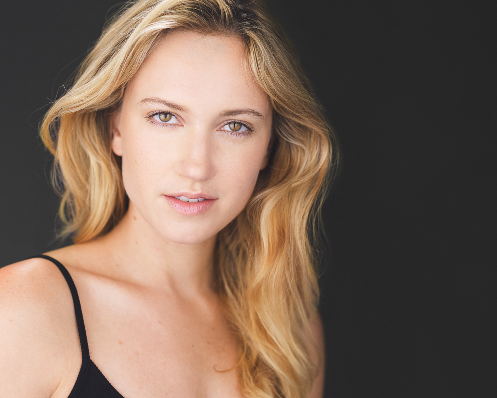
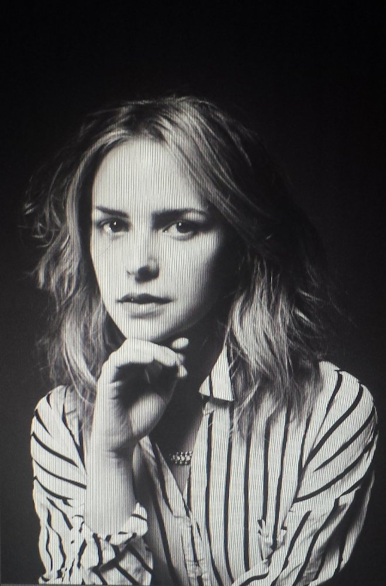
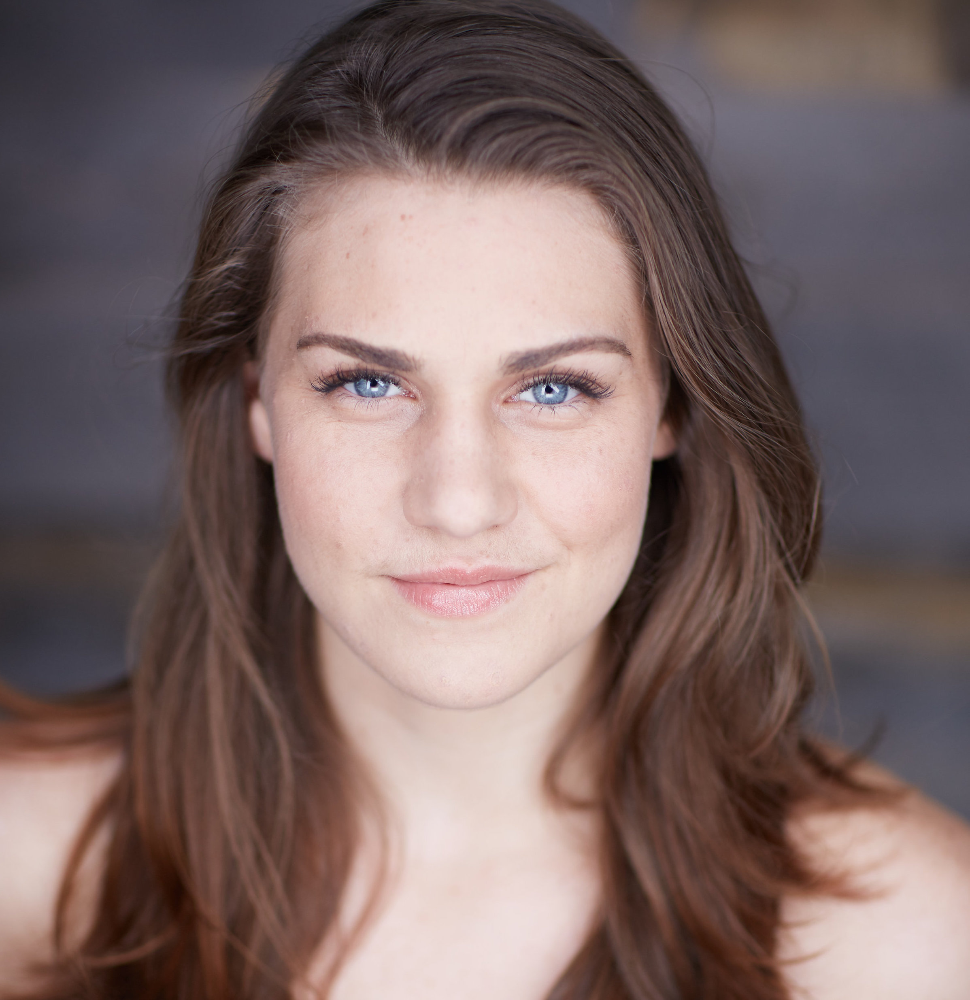
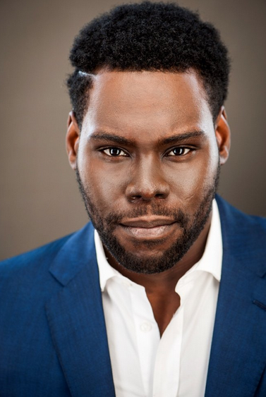
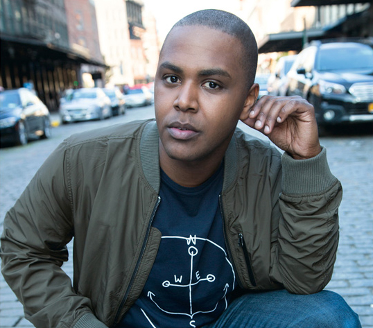
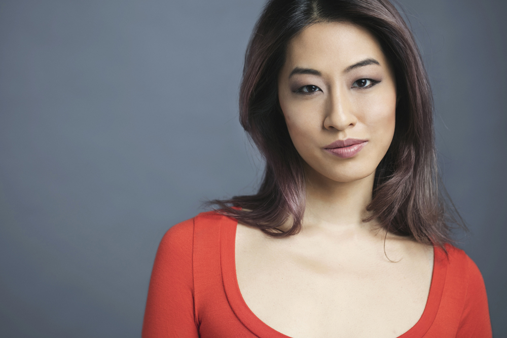
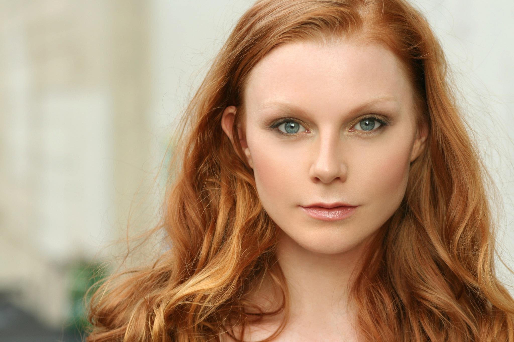
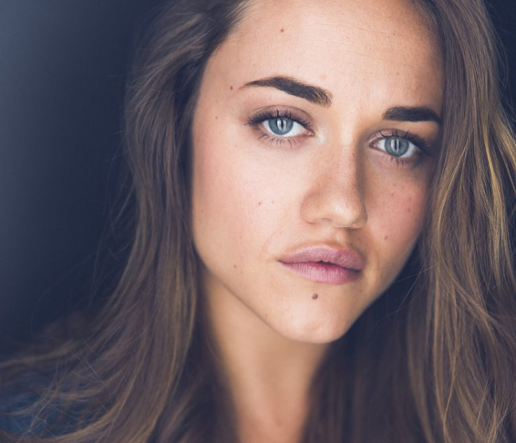
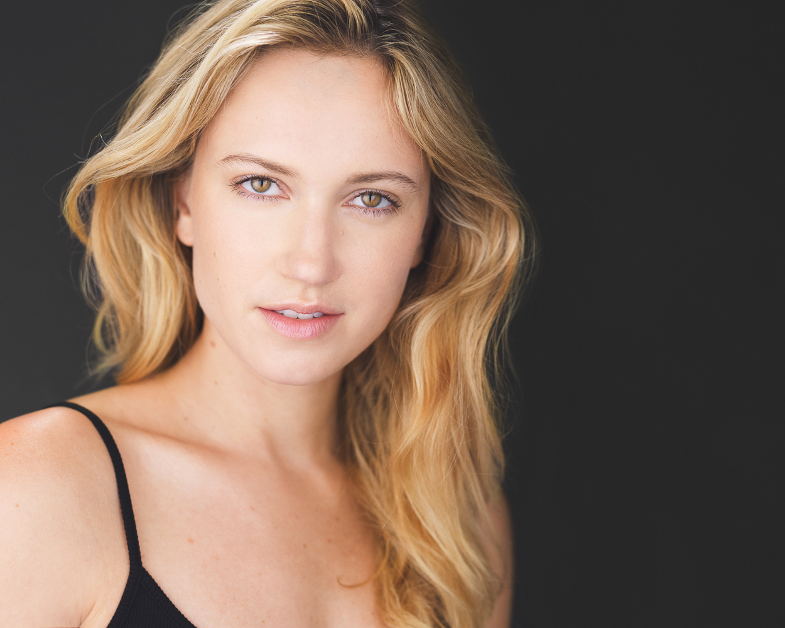
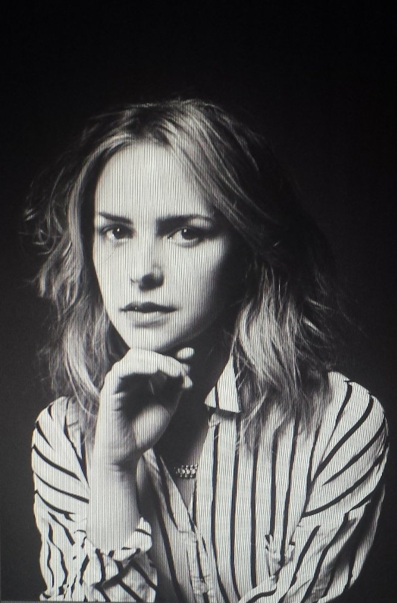
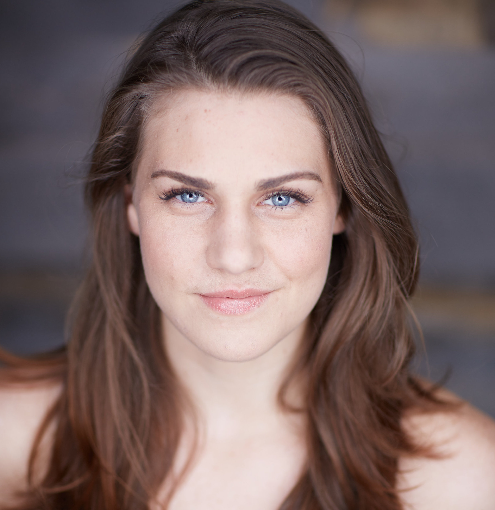
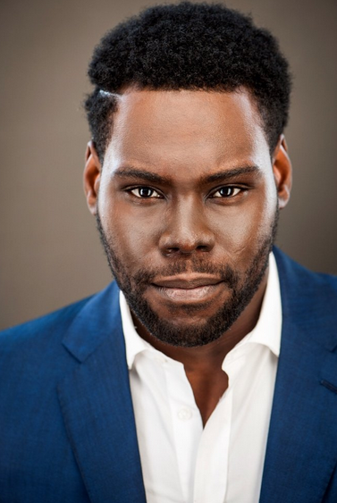
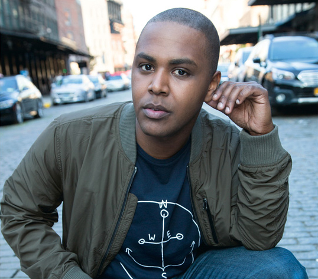
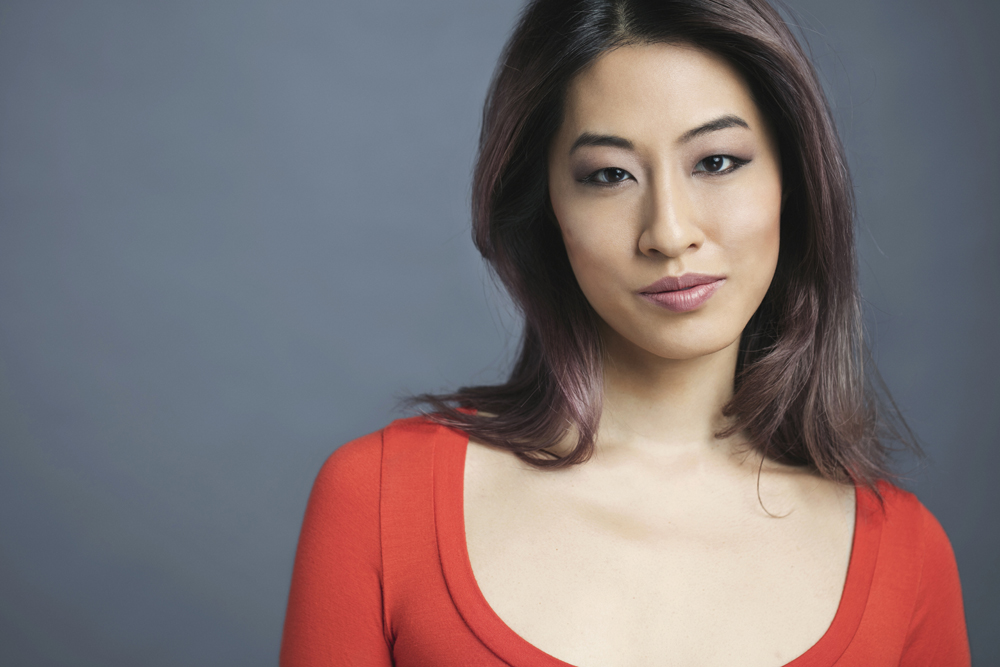
 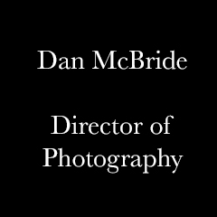
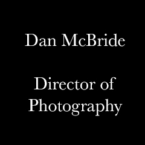